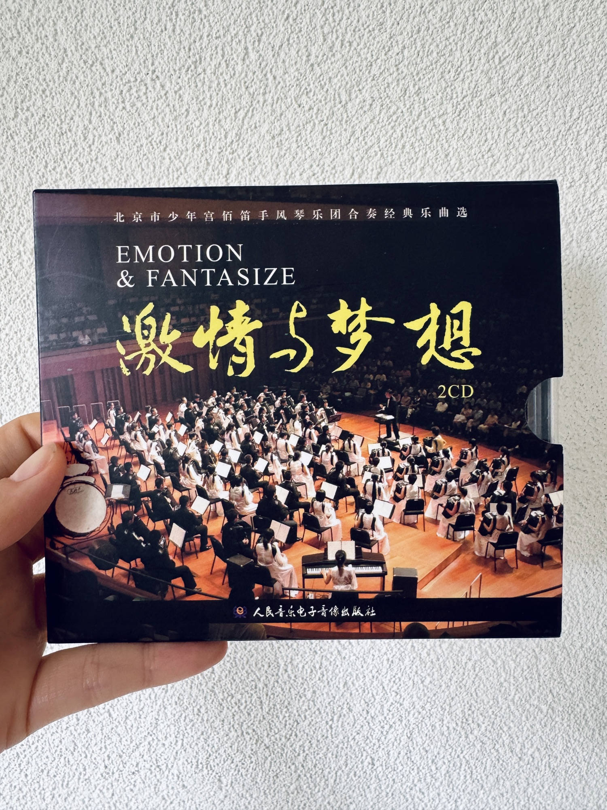
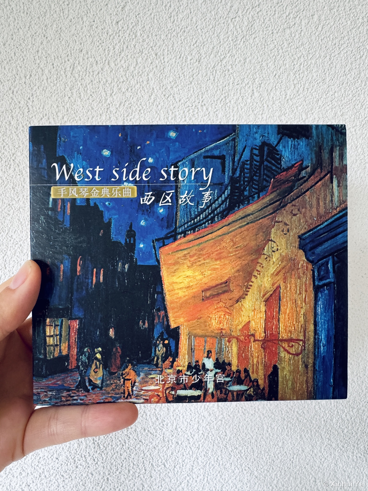

Music on Record

From childhood to adult
I started playing accordion when I was six. It was bigger than I was. I could play it alone for hours and did. Then I sat down in an orchestra and found out I had been doing the easy half.
Listening is key
In an accordion orchestra you literally cannot play without listening. Every part carries its own melody. Sometimes mine is the one that should be heard, so I lift it. Sometimes it should sink into the others, so I pull back and hold the ground for someone else to shine on.
I have never found a better description of collaboration. Not a metaphor for it. The thing itself, with sound.

From player to vice leader
At some point I started teaching. As part teacher I worked with the younger players on their own lines, helping them practice, helping them hear the others while they play. That was the first time I was responsible for anyone but myself. Getting a phrase right on my own is one problem. Getting sixteen people to the same bar together is another one entirely.
Later I became vice leader. I ran rehearsals, assigned parts, and kept bringing new players up to speed. Assigning parts is what I remember most. You are not handing out difficulty levels. You are telling people who gets heard in this piece and who holds the ground, and then making it sound like one thing.
I also played on two professionally recorded CDs with the orchestra, West Side Story and Emotion and Fantasize. Recording is where the listening gets ruthless. On stage a wobble passes. On a recording it stays.


I research how people work together when they are apart. It is the same question, without the sound. Who is carrying the melody right now, and who noticed.